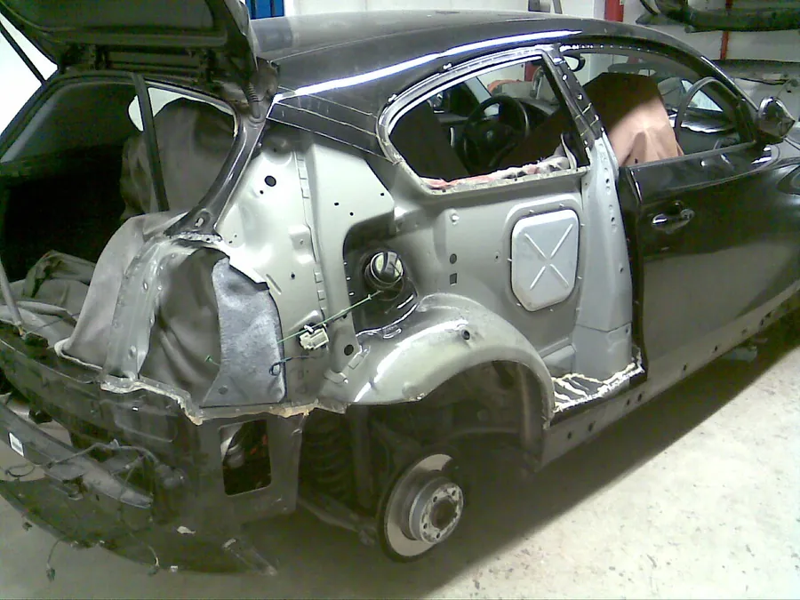
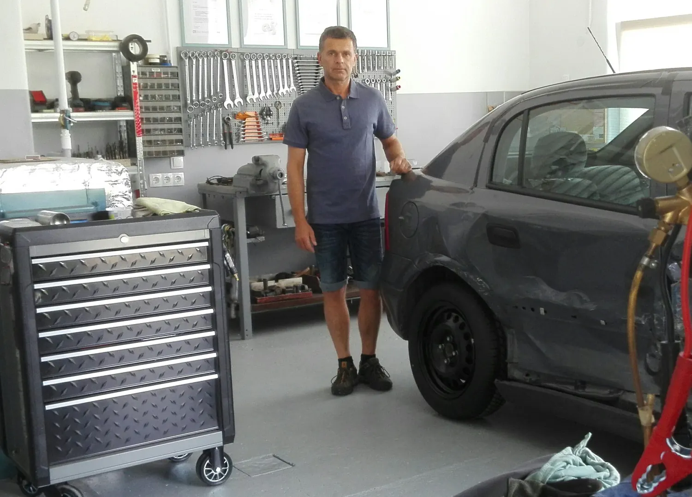
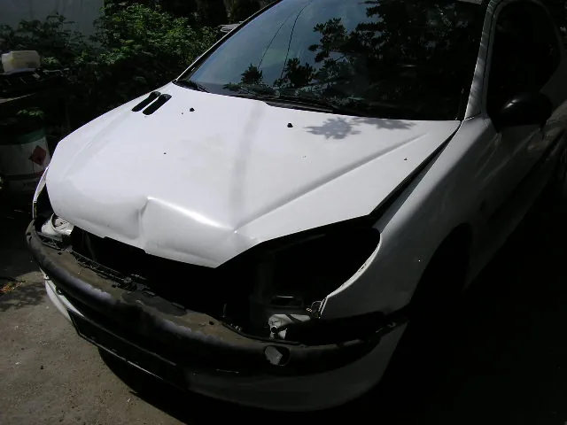
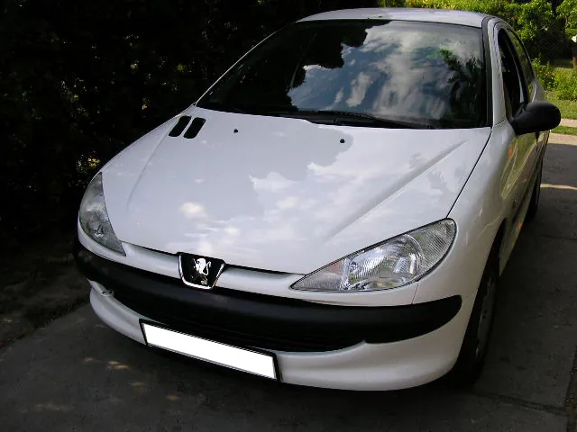
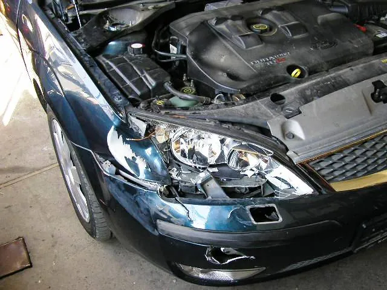
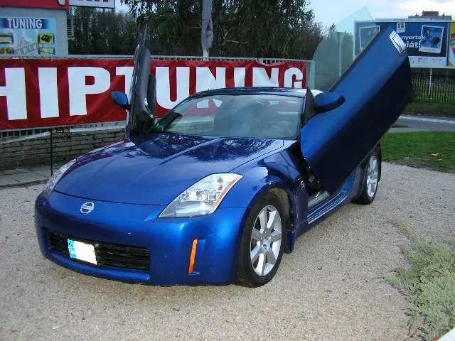
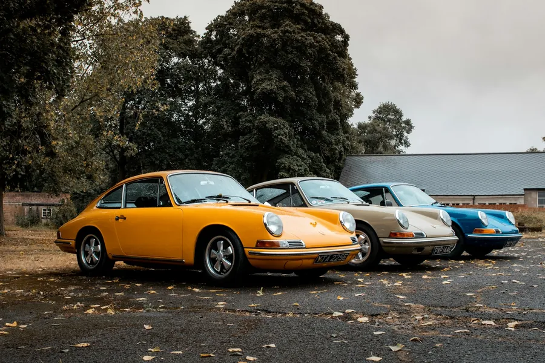
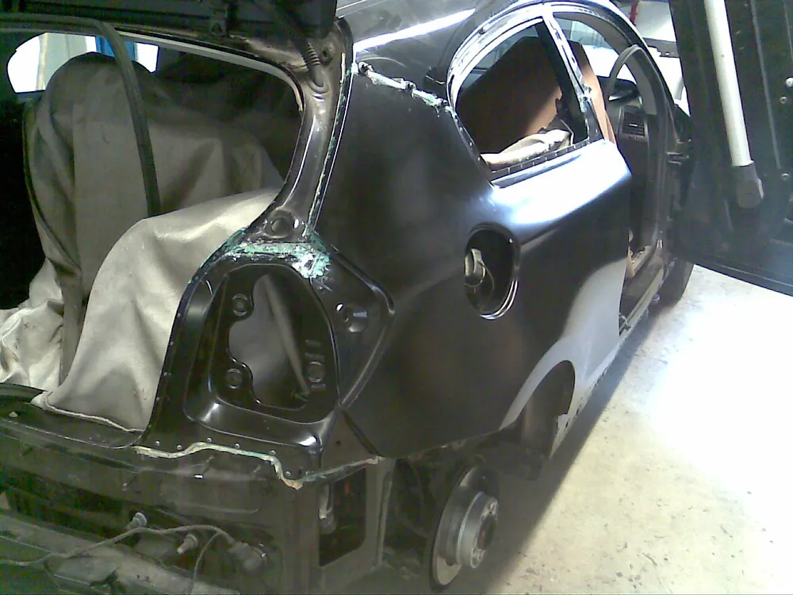

Karosszériajavítás fényezéssel
Személyautók teljes körű karosszériajavítása, fényezéssel együtt.
Minden, ami karosszéria: Venczel Péter karosszérialakatos mester családi műhelye. Kárfelmérés a telephelyen, ügyintézés a biztosítóval, és javítás fényezéssel együtt.
4,9 · 85 Google-vélemény

Nézze meg egy hasonló javításunkat a műhelyből, és kérjen visszahívást: a sérülést telefonon átbeszéljük.
Válasszon egyet:


A műhely munkája: Peugeot 206 karosszériajavítás + fényezés
Személyautók teljes körű karosszériajavítását vállaljuk, a fényezéssel együtt – a sérült elemek javításától az utolsó rétegig.
Jó tudniAz alkatrészeket szerződött partnerektől szerezzük be: gyári és utángyártott karosszériaelemeket is.
Visszahívást kérek: ütközéses kárA mindennapi autótól a veteránig és a versenyautóig – minden, ami karosszéria.

Személyautók teljes körű karosszériajavítása, fényezéssel együtt.

Helyszíni kárfelmérés a telephelyen, kapcsolattartás a biztosítóval, ügyintézés.

Egyedi karosszéria-átalakítások, légterelők, spoilerek felszerelése.

Veteránautók felújítása, átalakítása, fényezése.
Mintakép: Valdemaras Januška / Unsplash
Kipufogódobok cseréje, kipufogórendszerek javítása.
Szélvédők, oldalüvegek cseréje.
Gyári és utángyártott elemek szerződött partnerektől.
Javítás és átalakítás versenyautókon is.
„Venczel Péter karosszéria lakatos mester vagyok, a Venczel karosszéria javító műhely tulajdonosa. Immáron 40 éves szakmai tapasztalattal és ügyfeleim pozitív visszajelzéseivel rendelkezem.”Venczel Péter, tulajdonos
A műhely apa és fia családi vállalkozásaként nyitotta meg kapuit.
Pár évig németországi javítóműhelyeknek is dolgozott: sérült autók javítása, Old Timer felújítások, versenyautók átalakítása.
Teljes belső felújítás, a mai igényeknek és javítási technikának megfelelő, új szerszámzattal.
Pécs, Kassa utca 24. – hétköznap reggel 8-tól.

Javítás, fényezés, átalakítás – kattintson a képre a nagyításhoz.
A munkafotók a műhely saját képei, a régi weboldalról.
„Komplett küszöbcserén volt az autó, másfél éve, azóta sem mutatkozott rozsda a javított részen.”
„Az autó tökéletes, mintha új lenne. … Gyors, precíz munka és nem horror áron.”
„Rendkívül részletesen és tisztán elmagyarázta, milyen opcióim lettek volna a javításra. Nagyon ritka az ilyen emberséges hozzáállás.”
„Pontos, precíz, gyönyörű munkát végeztek.”
Írja meg, mi történt az autóval, és munkaidőben visszahívjuk. Megbeszéljük, mikor hozza az autót kárfelmérésre.
Ha nem találja a választ, hívjon: 06 20 335 6870.
Igen. A kárfelmérés helyben, a Kassa utcai telephelyen történik, a biztosítóval a műhely tartja a kapcsolatot, és intézi az ügyet.
Szerződött partnerektől szerezzük be a gyári és az utángyártott karosszériaelemeket és alkatrészeket.
Igen: Old Timer felújítás, átalakítás és fényezés, valamint versenyautók átépítése is a profilunk része.
A javítás árát a sérülés megtekintése után tudjuk megmondani. Kérjen visszahívást, és megbeszéljük, mikor hozza az autót.
Hétfőtől csütörtökig 8:00–17:00, pénteken 8:00–15:00, szombaton és vasárnap zárva.
Pécsen, a Kassa utca 24. szám alatt (7623).